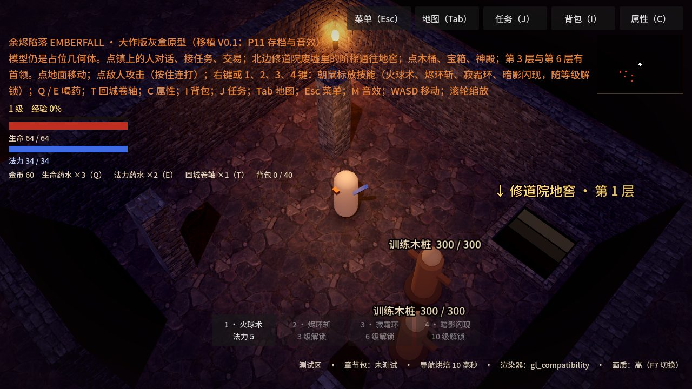
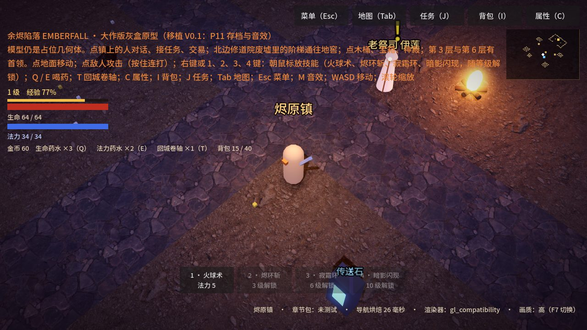
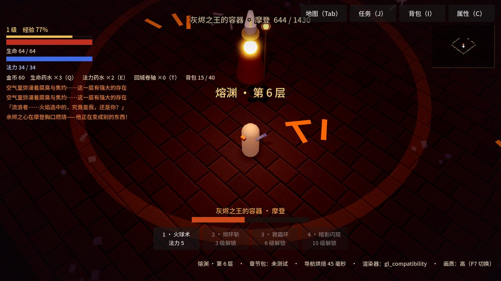
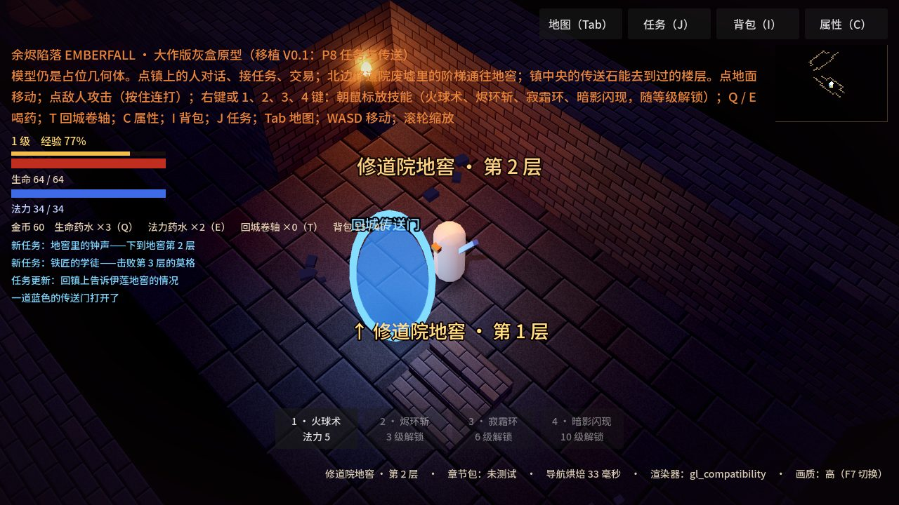
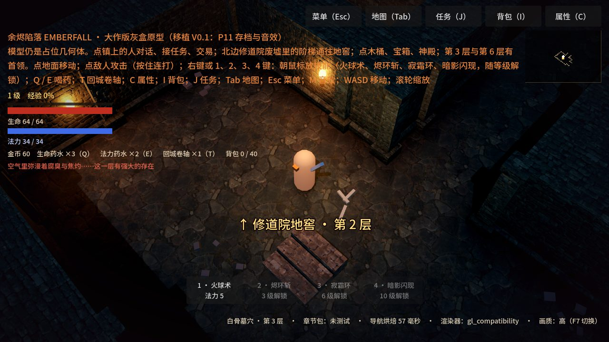
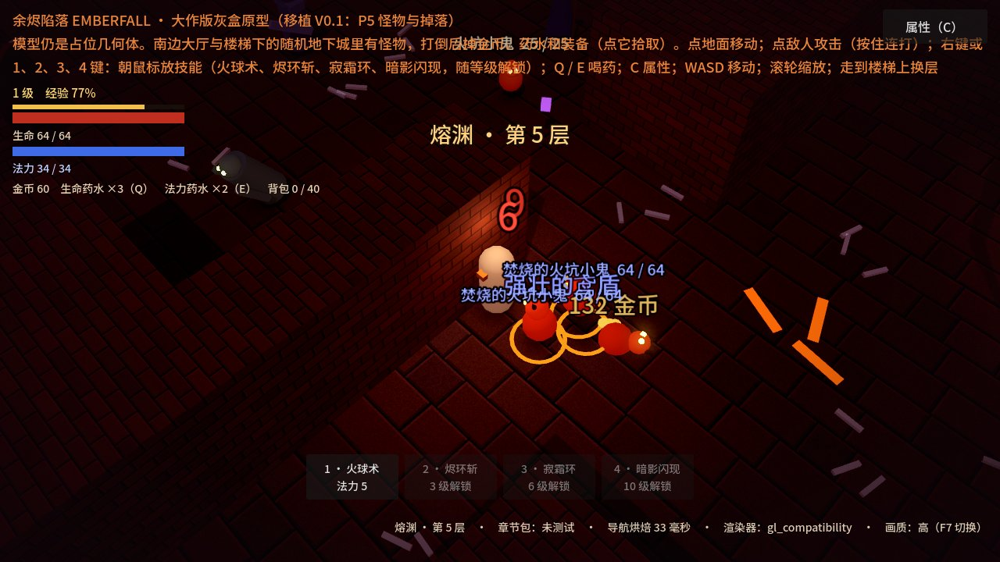

Ooglex Games · 原创 3D 暗黑风 · 开发中
余烬陷落EMBERFALL 大作版
《余烬陷落》的 3D 重制正在一步一步搭建：真正的三维场景、斜视角镜头、冷暖光与火把、会冲锋会召唤的怪物。这里放出的是当前的开发中版本，每完成一步就更新一次。
开发中预览 · 灰盒原型：人物、怪物和墙体目前都是占位几何体，还没有正式模型、动作、音效和剧情。现在从烬原镇出发：接下第一幕的三条任务，找镇上的人疗伤、买卖装备，再从修道院废墟的阶梯下到随机生成、有怪物和掉落的地下城；回城卷轴和传送石让你随时往返；第 3 层与第 6 层有首领把守。想玩完整的第一幕，请玩 V0.1 版。
免下载安装 · 电脑和手机浏览器都能打开 · 首次加载约 40 MB（游戏引擎），之后浏览器会缓存 · 需要支持 WebGL 2

类型3D 斜视角 · 动作角色扮演 · 地牢探索
状态开发中 · 正在把 V0.1 的全部内容移植到 3D
可玩内容烬原镇（任务 · 商店 · 治疗 · 传送石）· 随机地下城（地窖 / 墓穴 / 熔渊 / 深渊）· 8 种怪物 + 5 种精英 + 2 个首领 · 掉落
技术Godot 4 网页导出（WebGL 2 兼容渲染器）
现在能体验什么
镜头与移动已完成45° 斜视角跟随镜头，可缩放；点地寻路、WASD、手机虚拟摇杆；墙挡住角色时自动变透明。
战斗手感已完成点敌人挥砍，按住连打；受击停顿、击退、震屏、暴击与伤害数字。
怪物 AI已完成焦骨蛮兵（红色预警后冲锋）、骸骨弓手（保持距离放箭）、灰誓祭司（召唤腐尸）、腐尸。
光照与氛围已完成冷色环境 + 暖色火把、雾、泛光、暗角、圆形假阴影与轮廓光；低 / 中 / 高三档画质（按 F7 切换）。
V0.1 数据移植已完成25 种装备底材、16 种词缀、11 件传奇、10 种怪物、成长与掉落规则，与 V0.1 逐项对照一致（还没接进画面）。
随机地下城已完成V0.1 同款「房间 + 走廊」随机楼层：上下楼梯、首领房、火把与装饰；地窖、墓穴、熔渊、深渊四种色调，无限往下。
角色成长已完成打怪得经验、升级得属性点（力量 / 体能 / 魔力）、生命法力与每秒回复、生命 / 法力药水、倒下掉 10% 金币；按 C 打开角色面板。数值规则与 V0.1 相同。
四个技能已完成火球术（1 级）、烬环斩（3 级）、寂霜环（6 级，减速）、暗影闪现（10 级）；消耗法力、有冷却，伤害公式与 V0.1 相同。电脑朝鼠标方向释放，手机自动瞄准最近的敌人。
怪物、精英与掉落已完成V0.1 第一幕的 8 种怪物按楼层刷在地下城房间里；五种精英（迅捷、石肤、狂怒、嗜血、焚烧）蓝名、带光环；打倒后掉金币、药水和随机词缀装备，点它拾取。
背包与装备已完成8 个装备部位 + 40 格背包；看物品说明、与身上装备比较，装备 / 卸下 / 丢在地上，属性立即生效；等级不够的格子标红。按 I 或点「背包」。
烬原镇已完成地面换成 V0.1 的烬原镇：修道院废墟、房屋、篝火与树林；老祭司伊莲免费疗伤，铁匠格伦卖武器护甲，药剂师玛拉卖药水与首饰，都能买也能卖；倒下后在镇上篝火旁复活。
任务与传送已完成第一幕三条任务（地窖里的钟声、铁匠的学徒、余烬之心）：人物头顶「!」「?」提示、任务日志、任务奖励与结局文字；回城卷轴打开蓝色传送门、镇上的传送石去往到过的楼层；右上角小地图与全屏自动地图。
首领已完成第 3 层「腐肉监工 · 莫格」：背着铁笼的巨汉，红色长条预警后冲锋，半血暴怒；第 6 层「堕落院长 · 摩登」：扇形邪术弹、扩散火环、召唤骷髅、被贴近就瞬移，半血变身「灰烬之王的容器」。屏幕下方首领血条；击败后才出现下楼梯，并推进任务、播放结局文字。
移植其余内容进行中接下来依次移植：神殿、宝箱与木桶、战争迷雾，然后是存档与音效、无尽深渊。
正式美术素材规划中内容移植完成后，用 CC0 免费素材与原创设计替换占位几何体，逐步提升画质。
「进行中」「规划中」为计划，尚未实现。
实机截图





操作说明
电脑（鼠标 + 键盘）
左键点地面移动 / 点怪物攻击（按住持续）/ 点地上的东西拾取 / 点镇上的人对话 / 点传送石、传送门
WASD键盘移动
右键 / 1火球术（朝鼠标方向）
2 3 4烬环斩 · 寂霜环 · 暗影闪现（3 / 6 / 10 级解锁）
滚轮镜头缩放
Q E生命药水 · 法力药水
C I J角色面板（分配属性点）· 背包 · 任务日志
T回城卷轴（打开回镇上的传送门）
Tab自动地图
F7切换画质（低 / 中 / 高）
走上楼梯换层（烬原镇北边修道院废墟里的阶梯通往地下城）
手机 / 平板（触屏）
左下摇杆移动
点地面 / 怪物 / 人物移动、攻击或对话
攻击攻击最近的敌人
火 环 霜 闪四个技能，自动瞄准最近的敌人
血 蓝 城喝药 · 回城卷轴
地图 任务 背包 属性右上角，打开自动地图、任务日志、背包与角色面板
走上楼梯换层
手机默认中画质。首次加载约 40 MB，建议在 Wi-Fi 下打开。
说明：《余烬陷落》是 Ooglex 的原创作品，致敬经典暗黑风动作角色扮演游戏的玩法类型；人物、地名、剧情、美术与音效均为原创，
不包含任何其他游戏的程序、图像、音乐或文字素材，与暴雪娱乐（Blizzard Entertainment）及《暗黑破坏神》系列没有关联。
本页为开发中预览，画面、操作和内容都会随开发变化；目前没有存档。